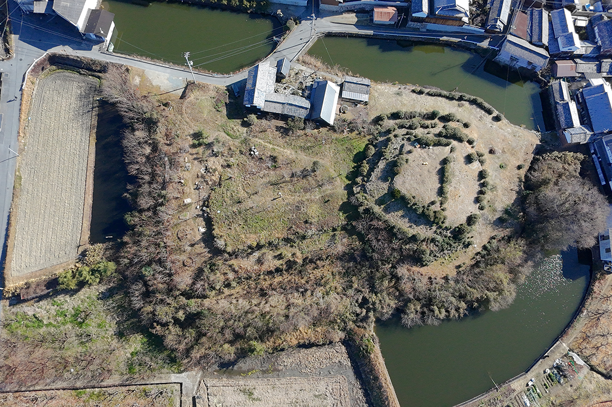
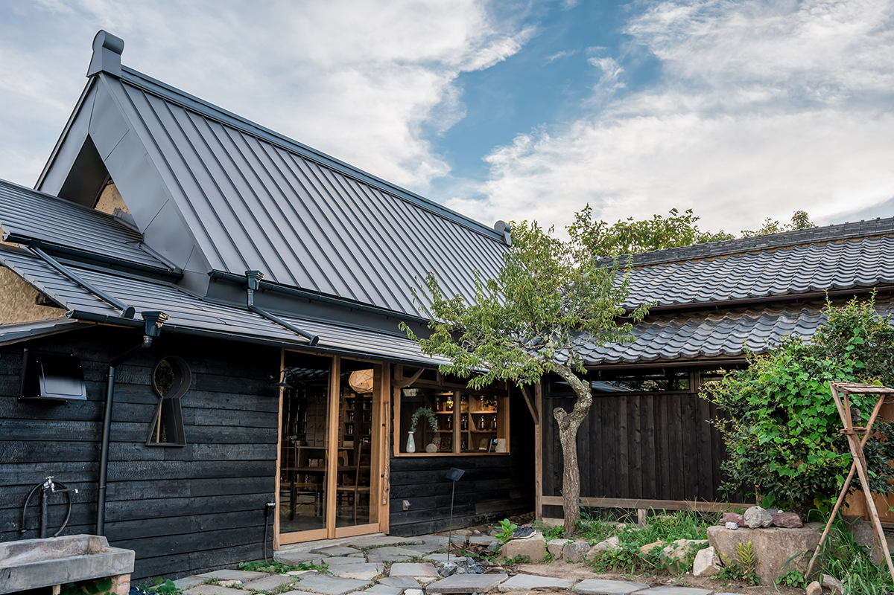
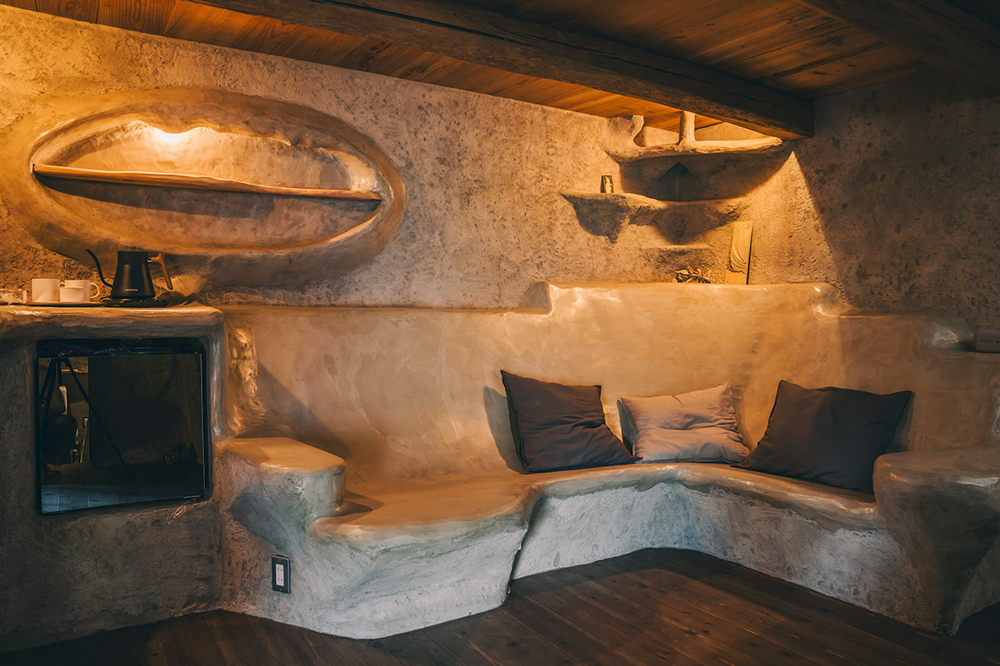
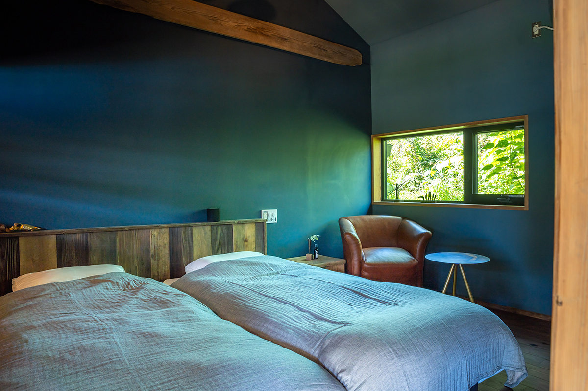
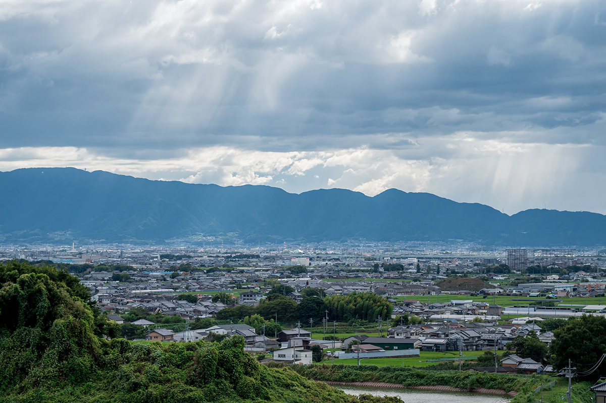
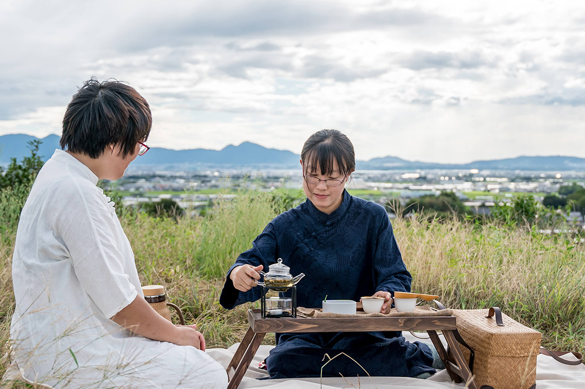
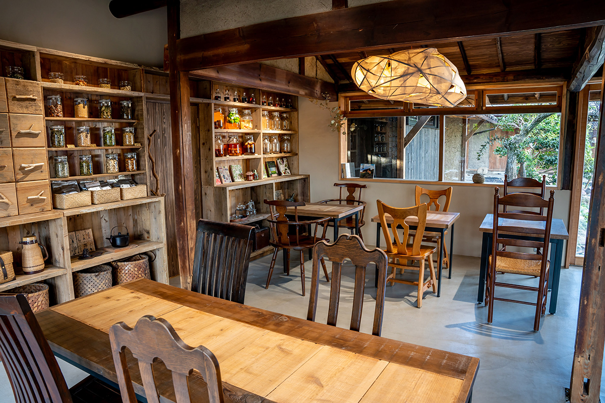

Префектура Нара · Тэнри · где остановиться
cofunia в Тэнри: ночлег в старом доме у подножия кургана

В городе Тэнри больше 1700 древних курганов, и у одного из них в 2025 году открылся гостевой дом. Ночевать здесь предлагают в столетнем доме, а утро встречать с видом на равнину Нара.
Место
Дом в тени кургана
Курганы кофун в Японии начали насыпать в III веке, и около 160 000 из них сохранились до сих пор. В городе Тэнри на востоке равнины Нара их больше 1700, больших и маленьких, а улицы хранят облик старых кварталов, сложившихся со времён средневековья.
На территории кургана Нисиямадзука стоит дом, которому больше ста лет. Его перестроили под гостевой дом cofunia, и 20 марта 2025 года он принял первых гостей. Хозяева говорят, что это первый в Японии ночлег у подножия кургана.

Идея
Пять стихий и пять чувств
В основе замысла древнее учение об инь-ян и пяти стихиях. Четыре корпуса сдаются целиком и носят имена стихий: Дерево, Земля, Металл и Вода. Пятый, «корпус Огня», общий: в нём устроены столовая и кухня. Всего в четырёх корпусах 10 спальных мест.


В комнатах мебель и предметы искусства сделаны вручную из природных материалов. Готовить здесь собирались из свежих местных продуктов: в планах были котёл с лекарственными травами и рисовая каша на чае.
Вид
Три горы Ямато с вершины кургана
Курган Нисиямадзука лежит на пешей дороге Яманобэ-но мити, которую упоминает ещё «Нихон сёки», летопись VIII века. С его насыпи открывается вид на три горы Ямато: Кагуяма, Унэбияма и Миминасияма. Вокруг тихие холмы, поля и деревни, и время здесь хочется проводить неспешно, на воздухе.

Природу этих мест в cofunia предлагают почувствовать всеми пятью чувствами в любое время года, а заодно представить, как жили люди, насыпавшие эти курганы.


Корпус на сутки с завтраком с марта по декабрь 2025 года стоил от 32 000 иен с налогом и сервисным сбором (кроме августа).
cofunia
- Адрес
- префектура Нара, Тэнри, Кайо-тё, 1021
- Номера
- 4 корпуса на 10 мест, отдельный корпус-столовая
- Заезд / выезд
- 16:00 / 10:00
- Цены / Вход
- от 32 000 иен за корпус на сутки с завтраком, с налогом и сервисным сбором (март–декабрь 2025 года, кроме августа)
- Сайт
- cofunia.co.jp